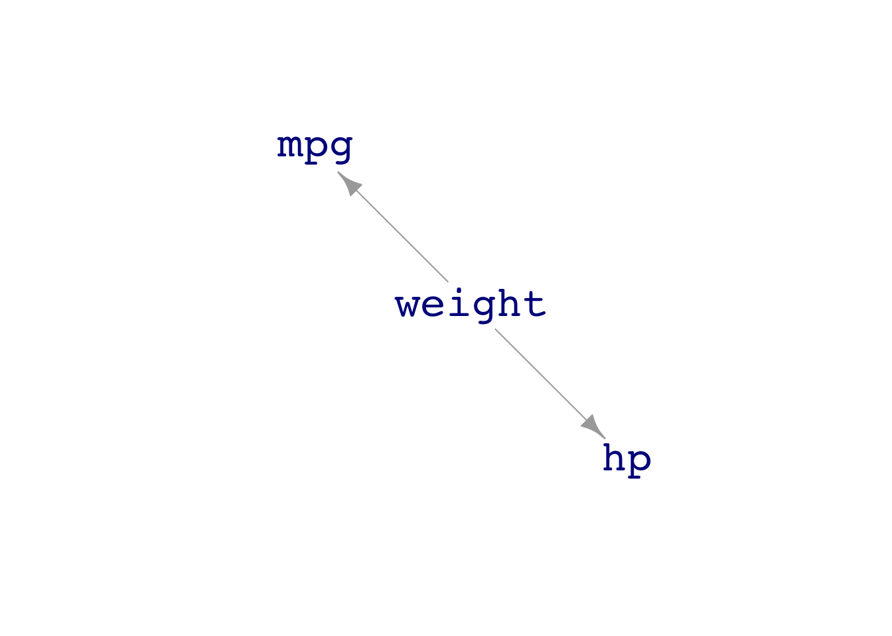
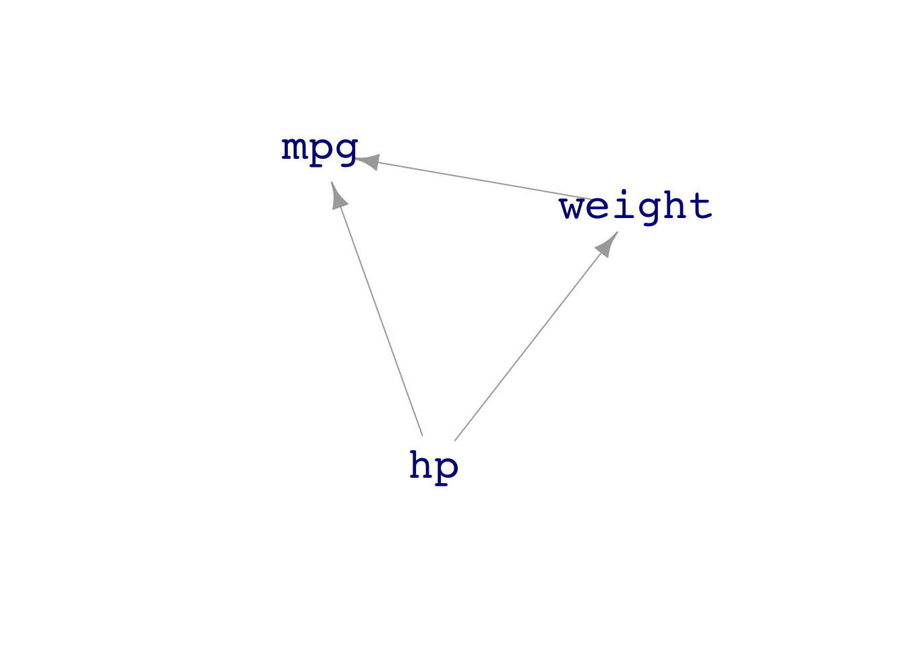
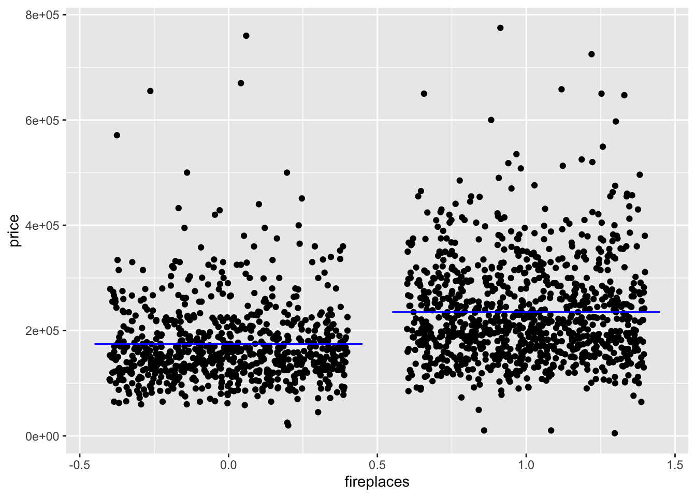
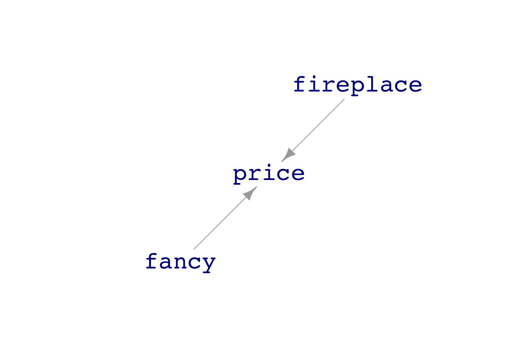
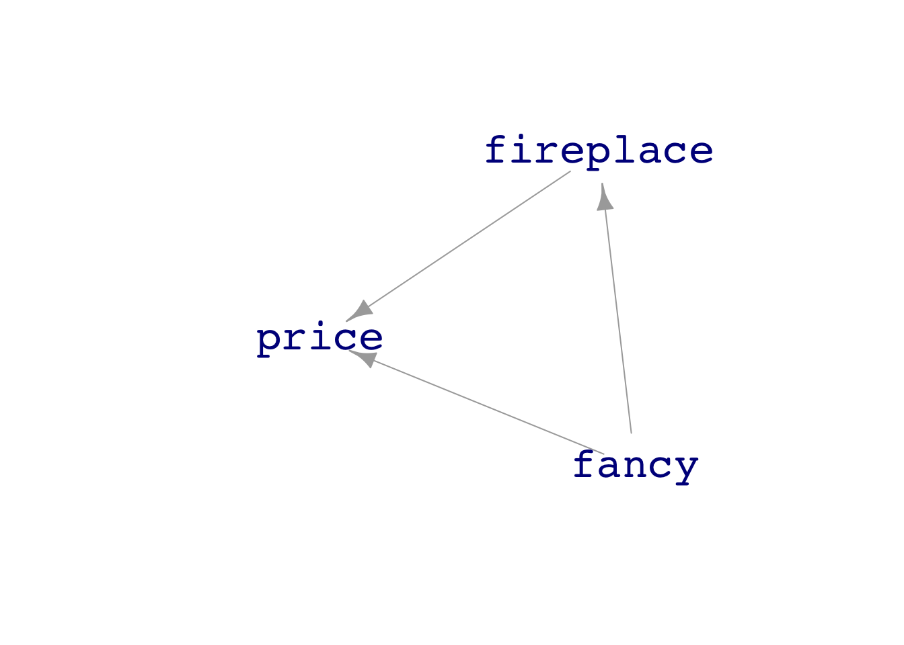

Learning Checks Lesson 30
It might seem from the negative sign on the effect size of engine horsepower on fuel economy that a more powerful engine is not as efficient than a less powerful engine at moving the car a given number of miles. That’s a reasonable conclusion. But the statistical thinker always keeps in mind other possibilities. For instance, another factor in fuel economy is the overall weight of the vehicle. A van designed to haul many passengers weighs more than a 2-passenger sporty vehicle. The van needs more horsepower because it is accelerating more weight.
Figure 1 shows four DAGs, each of which describe a plausible scenario.




In DAG A, the vehicle’s design weight determines that an engine with high horsepower will be part of the design. The weight is also responsible for the lower fuel economy.
The other DAGs describe other scenarios. In DAG C, for instance, the car designers decided to build a muscle car and put in a big engine. The engine itself adds to the vehicle’s weight, and the higher weight determines lower miles per gallon. DAG D expresses a slightly different belief: again the choice to build a muscle car (high hp) influences the weight. But in DAG B, the big engine also directly influences the fuel economy, perhaps because the fuel-to-air ratio of the car, in normal use, is not optimal.
As we will see in Lesson 28, to reveal the direct causal link between engine power and fuel economy requires different choices for the model formula depending on which DAG you think might be relevant.
To illustrate, let’s consider prices of houses as recorded in the mosaicData::SaratogaHouses data frame, based on house sales in Saratoga County, NY, USA in 2006. We’ll follow a question asked by then-student Candice Corvetti in her Stat 101 class at Williams College: “How much is a fireplace worth?” Response variable: price. Explanatory variable: fireplaces. Since a handful of the houses has multiple fireplaces, we will simplify by filtering out those houses to retain only the ones with a single fireplace or none.
Simplified <- SaratogaHouses %>%
filter(fireplaces <= 1)
Mod <- lm(price ~ fireplaces, data = Simplified)
Mod_values <- model_eval(Mod, fireplaces = c(0,1))
Mod_values fireplaces .output .lwr .upr
1 0 174653.3 -751.4332 350058.1
2 1 235162.9 59783.5404 410542.3Simplified %>%
ggplot(aes(x=fireplaces, y = price)) +
geom_jitter() +
geom_errorbar(data=Mod_values, aes(ymin=.output, ymax=.output, x = fireplaces), y=NA,
color="blue")
From the graphic, you can see that houses with a fireplace tend to have higher prices. From the report of the evaluated model, you can calculate the effect size: $235K for a house with a fireplace, $175K for a house without one. This suggests the value of a fireplace is $60K.
There are, of course, many other things that determine the price of a house. Real-estate agents famously list the three most important factors as “location, location, and location.” Common sense brings in other explanatory variables: how big the house is, how luxurious, how many bathrooms, and so on. The statistical thinker knows to put any one explanatory variable into the context of other plausable factors.
For simplicity, let’s collect all the factors other than fireplaces into a hypothetical variable which we will call “fancy.” Here are three plausible DAGs that plausibly describe an affect of fireplace on price in the context of fancy.


In DAG A, fancy and fireplace both contribute to price, but independently. In DAG B, fireplace directly contributes to price, but whether or not a house has a fireplace depends on the level of fancy. In DAG D, fireplace has no direct affect on price, which is set entirely by fancy. The fireplace variable is just an indicator of fancy.
We can’t say from the data alone which of these three DAGs is the closest description of the situation. In Lessons 28, 30, and 31 we will consider how the choice of explanatory variables in a model leads to a faithful or misleading picture of the connections. There you will find out that DAGS A & B both imply that fancy should be an explanatory variable if we want the effect size from the model to represent the direct effect of a fireplace on price. Easy enough to fit that model, … except that we don’t have an actual variable fancy in the SaratogaHouses data frame. To keep things simple for the moment, we will use livingArea—the size of the house—as a rough approximation to the hypothetical fancy.
The effect size of fireplaces on price is found by comparing the model output for houses with and without a fireplace, holding the values of all the other explanatory variables constant.
Mod2 <- lm(price ~ fireplaces + livingArea, data = Simplified)
model_eval(Mod2, fireplaces = c(0,1), livingArea = 2000) fireplaces livingArea .output .lwr .upr
1 0 2000 234706.4 101212.9 368199.9
2 1 2000 240420.8 106988.7 373852.8For a house with living area 2000 feet2, the model output is $235K with no fireplace and $240K with a fireplace, putting the effect size of fireplace on price at $5K. That’s much smaller than the previous model, price ~ fireplace, gave for the effect size. The reason for the difference in results from the two models is that houses with fireplaces tend to be larger in area.
An idea …
Suppose the DAG is that fireplaces cause living area (fancy) and that both of these cause price. That’s distinct from DAG C in the above, because the causal arrow from fancy to fireplace is reversed. Could we decide between DAG C and this new DAG. How about the models fireplace ~ livingArea versus fireplace versus fancy plus price.
For models that are constructed by adding together different terms, like the price ~ fireplaces + livingArea model of the previous example, the estimated effect size for a given term is the corresponding model coefficient. The confidence interval on that effect size is simply the confidence interval on the coefficient. For example, for fireplaces:
lm(price ~ fireplaces + livingArea, data = Simplified) %>% confint() 2.5 % 97.5 %
(Intercept) 6979.0960 27188.993
fireplaces -1521.3683 12950.131
livingArea 102.7093 114.913Thus, the confidence interval for the effect of a fireplace ranges from negative $1500 to positive $13,000. Broad though this may seem at first, it does carry genuine information. You can be confident that a fireplace alone will not add as much as $50,000 to the price of the house, nor will it cause the house’s value to fall by $10,000.
The confidence interval on the livingArea is pretty narrow $103 to $115 per square foot. If you’re looking to save a bit of money by shopping for a slighly smaller house, say 200 square-feet smaller, you can adjust your budget downwards by something in the range of $206,000 to $230,000. The units here come from multiplying the area units (square feet) by the effect size units (dollars per square feet), producing a quantity denominated in dollars.
It’s important always to keep in mind that an estimate of an effect size will likely be misleading if your choice of model seriously misrepresents reality. For instance, a salesperson hawking add-on fireplaces might show you results from the “obvious” model price ~ fireplace, leading to an effect size of $52,000 to $69,000, calculated this way.
lm(price ~ fireplaces, data = Simplified) %>% confint() 2.5 % 97.5 %
(Intercept) 168209.69 181097.01
fireplaces 51899.26 69119.92It would be unfair to say that the $52,000 to $69,000 claim is a lie; it’s entirely consistent with the data. But it relies on a grossly implausible description of the factors that determine house price.
30.1
Dags with longer confounding pathways. Is there mixing when leaving out an element in the pathway. Mix up the directions of the arrows and show that the mixing occurs when the covariate is included in the model.
Regression to the mean example.
Collider?